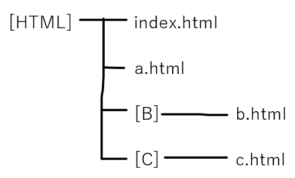

HTML用語まとめ
HTMLについてでぼくがここまでで学んだことをまとめました。
ぼくのノートをそのままHTMLでまとめただけです。
もくじ
１，要素と属性
２．文字コード
３．カテゴリとコンテンツモデル
４．特殊な記述の文字
５．強調と重要
６．箇条書き
７．用語説明リスト
８．絶対パスと相対パス
９．ハイパーリンク
１０．画像
１１．表
１２．フォーム
要素と属性
- 要素
- 今何を書いているのか（ページの情報なのか、見出しなのか、段落なのかなど）を宣言するのが要素。
- 属性
- 要素の細かい種類を宣言するのが属性。
例えば、要素でページの情報を書くことを宣言して、その中の言語についてを書き、言語は日本語であることを宣言するときは、
<meta lang="ja">
meta…ページのメタ情報、lang…言語、ja…日本語
文字コード
どの文字がどの番号と対応しているかを記述したのが文字コード
文字コードによって対応している文字が違うため、初めに宣言しておかなければ文字化けしてしまう。
<meta charset="文字コード名">で宣言できる。
カテゴリとコンテンツモデル
要素は７つのカテゴリに分類される。
また、それぞれの要素にコンテンツモデルがある。
<???>~<###>~</###></???>
と書きたい場合、<???>のコンテンツモデルに含まれるカテゴリ内の要素しか<###>のところに書けない。
とほほのWWW入門ではコンテンツモデルのことを子要素と記述してある。
特殊な記述の文字
<や&などのもじをブラウザに表示したいときは、&〇〇;と記述する。
よく使うもの一覧
- &
- ＆amp;
- <
- ＆lt;
- >
- ＆gt;
- スペース
- ＆nbsp;
など
ごく一部しか書いてないので、知りたい人は他のサイトに行こう！
※そのまま入力すると出力できないので、上の記述は&が全角になっています。
強調と重要
- <em>
-
強調すべき箇所につける。そのまま出力すると斜体になる。
付ける場所によって文の意味やニュアンスが変わる。
例１：<em>僕は</em>100点をとった。
この場合、「僕は」なので他の人はとれなかったのだろうという背景が読み取れる。
例２：僕は<em>100点を</em>とった。
この場合、100点をとったのがうれしいのかなぁって感じになる。
- <strong>
-
文章の重要な箇所につける。そのまま出力すると太文字になる。
文章の意味もニュアンスも変わらないが、重要だということがコンピューターに伝わる。
例：<strong>酸性タイプの製品と一緒に使う（まぜる）と有害な塩素ガスが出て危険</strong>
箇条書き
- <li>
- 箇条書きの➀や・に当たるもの。
- <ul>
- これから順不同型の箇条書きを書きますよという宣言
- <ol>
- これから番号順の箇条書きを書きますよという宣言
（使用例）
<ul>
<li>HOME</lt>
<li>ACCESS</lt>
…
</ul>
↓こうすると
・HOME
・ACCESS
…
というようになる。
ulをolに変えると➀➁となり、手順を表すときなどに使える。
用語説明リスト
<dl>
<dt>HTML</dt>←用語
<dd>Webサイトの～～</dd>←説明
…
</dl>
という感じで記述すると
HTML
Webサイトの～～
…
という感じになる。
何かしらを説明するときに使う。
このサイトも多用している。
dtの子要素には一部配置できない要素があるので、上手くいかないときはググろう。
絶対パスと相対パス
- 絶対パス
- 住所のようなもの。主にURLのこと。
- 相対パス
-
道順のようなもの。記述方法は以下の通り。
[]はファイル、.htmlはフォルダとする。

というようにファイルがあるとする。
フォルダを開くときはフォルダ名をそのまま。
ファイルの中に入る時はファイル名の後に「/」を入れる。
ファイルから出るときは「../」を入れる。
この3つのルールで相対パスは記述する。
index.htmlからa.htmlまでの相対パスはa.htmlと記述すればOK。
index.htmlからb.htmlまでの相対パスはB/b.htmlになる。
b.htmlからindex.htmlへの相対パスは../index.htmlとなる。
b.htmlからc.htmlへの相対パスは../C/c.htmlとなる。
ハイパーリンク
文字や画像をクリックすると任意のファイルを開くことができる。
- <a href"開きたいファイルへのパス">
- ハイパーリンクの基本形。hrefは属性だが、基本セットなのでセットで覚える。
- brank
- a要素の属性。新しいウィンドウで表示できる。
- ページ内リンク
-
このページのもくじのような感じでページ内の任意の場所に移動できる。
開きたい箇所にid="～～"という感じでid属性を配置し、hrefの属性値に「#～～」とするとページ内リンクができる。
画像
<img>で挿入できる。
属性
- src
- 必須属性。属性値に表示したい画像のパスを書く。
- alt
- 表示できない場合に表示するテキスト
- wedth、height
- wedthで横幅、heightで高さを指定する。この二つで大きさを指定すると処理が少し速くなる。
表
<table>
<tr>行
<th>見出し１</th>
<th>見出し２</th>
</tr>
<tr>
<td>内容１</td>
<td>内容２</td>
</tr>
<tr>
<td>内容３</td>
<td>内容４</td>
</tr>
</table>
とすると、
| 見出し１ |
見出し２ |
| 内容１ |
内容２ |
| 内容３ |
内容４ |
というように表示される。
罫線を入れたければborder属性を配置する。
- <thead>
-
表の見出しだということがコンピューターに教えられる。
スクロールしないと全て見ることができない大きさの表の場合、表を印刷するときにこの見出しが一番上に表示された状態で表示される。
- <tbody>
- 表の内容部分だよとコンピューターに教えられる。
- <tfoot>
- 表の一番下だということをコンピューターに教えられる。theadのように印刷するときに一番下に表示されて状態で印刷される。
table要素の子要素の順番は決まっている。順番は以下の通り。
- 任意で一つのthead要素
- 一つのtbody要素か、一つ以上のtr要素
- 任意で一つのtfoot要素
フォーム
- <form>
-
ファイル内に入力フォームをつくれる。
属性
- action
- 属性値を送信先のパスにすることで送信先を指定できる。
- method
-
送信方法をしていできる。
属性値には"get"と"post"の2種類。
getにするとURLを見れば入力した内容がわかる状態で送信する。
postにすると内容がバレないように送信できる。
- <input>
-
フォームの内容を宣言する要素。
属性
- type
-
フォームを作るための部品。
属性値は以下の通り。
- text
-
テキスト1行分の入力フォームができる。
↑こんな感じ
- password
-
textの文字が伏せられるバージョン。
↑こんな感じ
- radio
-
一つだけしか選択できないチェックボックス。
男
女
↑こんな感じ
- checkbox
-
複数選択可のチェックボックス。
javascript
PHP
java
python
↑こんな感じ
- submit
-
送信ボタン。
↑こんな感じ
- name
-
部品の名前を決める。
radioやcheckboxを複数個つくり、同じ名前にするとそれらは同じ質問ということになる。
- value
-
部品の種類によって機能が変わる。
textの場合、初期値がフォームに入力されている初期値を設定できる。
checkboxやradioの場合、チェックボックスにチェックが入った状態で送信した時に送信する内容を設定できる。
チェックボックスは自身にチェックが入っているかどうかしかわかっていないため、送信する内容を設定する必要がある。
submitの場合、ボタンに表示するテキストを設定できる。上の送信ボタンの場合、属性値に「送信」と設定してある。
- <textarea>
-
複数行のテキスト入力フォーム。何も記述せずに閉じてOK。記述したテキストは初期値となる。
属性
- name
-
inputのnameと使い方は同じ。
- cols
-
1行の文字数を指定する。ただし、ブラウザによって変わるため大体の目安と考えると良い。
- rows
-
表示できる行数を指定する。ただし、記入できる文字数は無制限。表示しきれない文字数の場合、スクロールできるようになる。
- <select>
-
選択肢の多い場合に使用することの多い選択項目の表示方法。
↑こんな感じ
- option
-
selectの選択肢を設定する要素。selectの子要素として使用する。
- <label>
-
テキストをクリックするとフォームの部品をクリックしたことにすることにできる。
↑こんな感じ
使い方は2種類。
- 使い方１
-
<label>お名前：<input type="text"></label>
- 使い方２
-
<label for="your_name">お名前：</label>
<input type="text" name="your_name" id="your_name">
↑こちらはテキストとフォームが離れている場合にも使用可能。